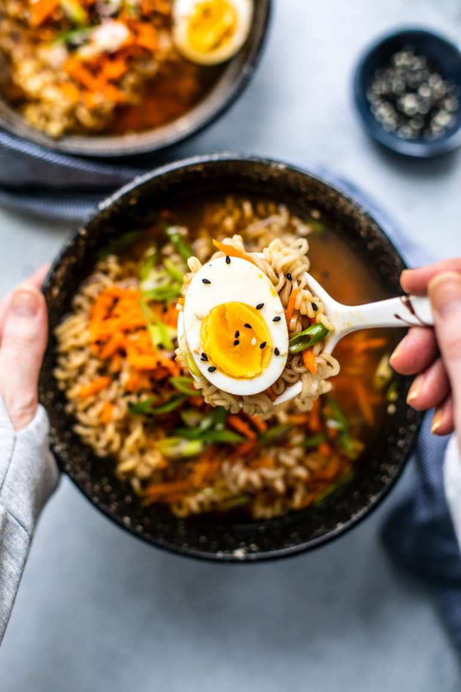

Ramen

Description heading
Even better than ramen from japan!
Ingredients
- Sesame oil
- Olive oil
- Garlic
- Chicken or vegetable broth
- Low sodium soy sauce
- Noodles
- Egg
Steps
- Heat the oil in a medium-sized saucepan over medium heat. Once the oil is hot, you’ll add the garlic and ginger, and simmer until fragrant.
- Transfer the broth to the pot and add the rice vinegar, soy sauce, and Sriracha. Give the broth a good stir to combine the ingredients.
- Let the soup simmer for about five minutes, then give it a taste and add more soy sauce or Sriracha if needed. (This depends on how salty and spicy you want it.)
- Once the broth is ready, spoon it over the noodles, then garnish the bowl with whatever you please!
Back